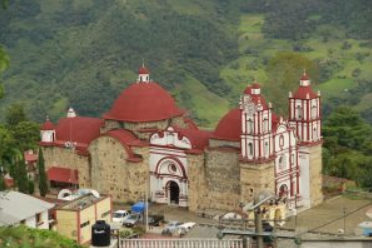

Bienvenido a Café de la Sierra
Descubre el auténtico sabor de las montañas en cada taza.
Más Información
Nuestra Historia
Desde generaciones, nuestra finca cultiva café con técnicas sostenibles y pasión por la calidad.
Proceso Artesanal
Seleccionamos cada grano a mano y lo tostamos lentamente para resaltar su aroma natural.
Costos
Precios accesibles, calidad superior.
- 250g - $50
- 500g - $100
- 1kg - $200
Envíos
Te llevamos el café a tu puerta.
Envíos nacionales en 48h. Envíos internacionales en 5 a 7 días laborables.
Ubicación
Estamos ubicados en las montañas del norte, donde el clima y el suelo son ideales para el cultivo del mejor café.